Master how to communicate time-series patterns, trends, and discrete observations through professional line charts, custom markers, distinguishable styles, and multi-series dashboards.
Line plot data visualization ka sabse widely used chart type hai. Iska primary objective hota hai: Continuous sequence ya time-interval ke across data ka flow aur direction show karna.
Aao 7 days ke study hours ko line plot par visualize karke trend observe karte hain:
import matplotlib.pyplot as plt # 7 Days Study Hours Dataset days = ['Mon', 'Tue', 'Wed', 'Thu', 'Fri', 'Sat', 'Sun'] study_hours = [2.0, 3.5, 3.0, 4.5, 4.0, 6.5, 5.0] fig, ax = plt.subplots(figsize=(8.5, 4.5), dpi=150) ax.plot(days, study_hours, color='#0284c7', marker='o', linewidth=2.5, markersize=8, label='Daily Study Hours') ax.axhline(3.5, color='#d97706', linestyle='--', linewidth=1.8, label='Weekly Target (3.5h)') ax.set_title('Student Weekly Study Hours Trend', fontsize=13, fontweight='bold') ax.set_xlabel('Day of the Week', fontsize=11, fontweight='bold') ax.set_ylabel('Hours Studied', fontsize=11, fontweight='bold') ax.set_ylim(0, 8) ax.grid(True, linestyle='--', alpha=0.5) ax.legend(loc='upper left') # Numerical annotations above each point for i, h in enumerate(study_hours): ax.annotate(f"{h}h", (days[i], h), textcoords="offset points", xytext=(0, 9), ha='center', fontweight='bold', color='#0284c7') plt.show()
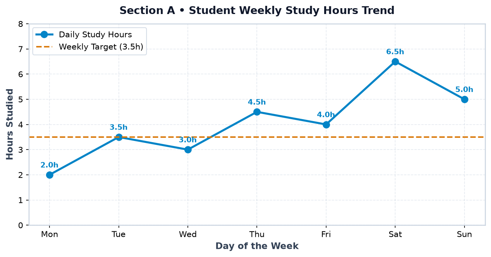
Humare financial savings mein har month hone wale rise aur fall ko observe karna:
import matplotlib.pyplot as plt months = ['Jan', 'Feb', 'Mar', 'Apr', 'May', 'Jun'] savings = [1200, 1600, 1400, 2100, 2500, 2900] fig, ax = plt.subplots(figsize=(8.5, 4.5), dpi=150) ax.plot(months, savings, color='#059669', marker='s', linewidth=2.5, markersize=8, label='Monthly Savings') ax.set_title('Student Monthly Pocket Money Savings (6-Month Trend)', fontsize=13, fontweight='bold') ax.set_xlabel('Month', fontsize=11, fontweight='bold') ax.set_ylabel('Savings (Rs.)', fontsize=11, fontweight='bold') ax.set_ylim(800, 3200) ax.grid(True, linestyle='--', alpha=0.5) for m, s in zip(months, savings): ax.annotate(f"Rs.{s}", (m, s), textcoords="offset points", xytext=(0, 9), ha='center', fontweight='bold', color='#059669') plt.show()
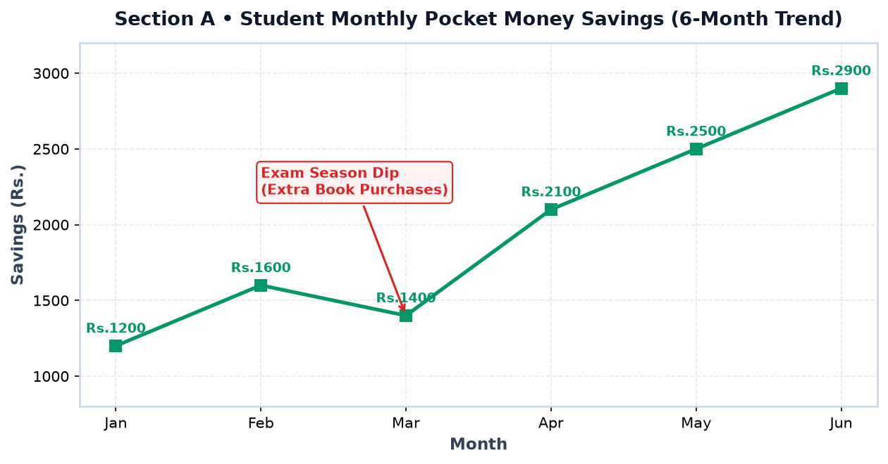
plt.plot() vs ax.plot()Matplotlib do interfaces provide karta hai line charts draw karne ke liye. Dono ka syntax beginner-friendly hai:
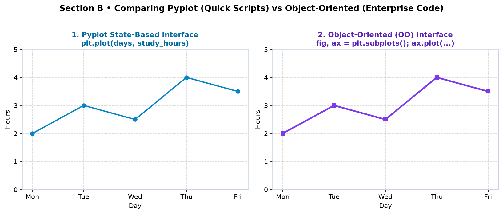
Simple single-plot scripts mein plt.plot(x, y) fastest way hota hai:
import matplotlib.pyplot as plt days = ['Mon', 'Tue', 'Wed', 'Thu', 'Fri'] study_hours = [2, 3, 2.5, 4, 3.5] plt.plot(days, study_hours, color='#0284c7', marker='o') plt.title('My Weekly Study Hours') plt.xlabel('Day') plt.ylabel('Study Hours') plt.grid(True) plt.show()
Jab humein figures, axes limits aur multi-panel layouts customize karne hote hain, tab fig, ax = plt.subplots() industry standard practice hai:
import matplotlib.pyplot as plt hours = ['00:00', '03:00', '06:00', '09:00', '12:00', '15:00', '18:00', '21:00'] temp = [21.5, 20.8, 20.2, 23.4, 26.8, 28.1, 25.4, 22.9] fig, ax = plt.subplots(figsize=(8.5, 4.5), dpi=150) ax.plot(hours, temp, color='#dc2626', marker='^', linewidth=2.5, markersize=8, label='Sensor Temp (C)') ax.axhline(27.0, color='#d97706', linestyle='--', linewidth=1.8, label='Server Warning Threshold (27 C)') ax.set_title('24-Hour IoT Server Room Temperature (ax.plot)', fontsize=13, fontweight='bold') ax.set_xlabel('Time of Day (24-Hour Clock)', fontsize=11, fontweight='bold') ax.set_ylabel('Temperature (C)', fontsize=11, fontweight='bold') ax.set_ylim(18, 30) ax.grid(True, linestyle='--', alpha=0.5) ax.legend(loc='upper left') fig.tight_layout() plt.show()
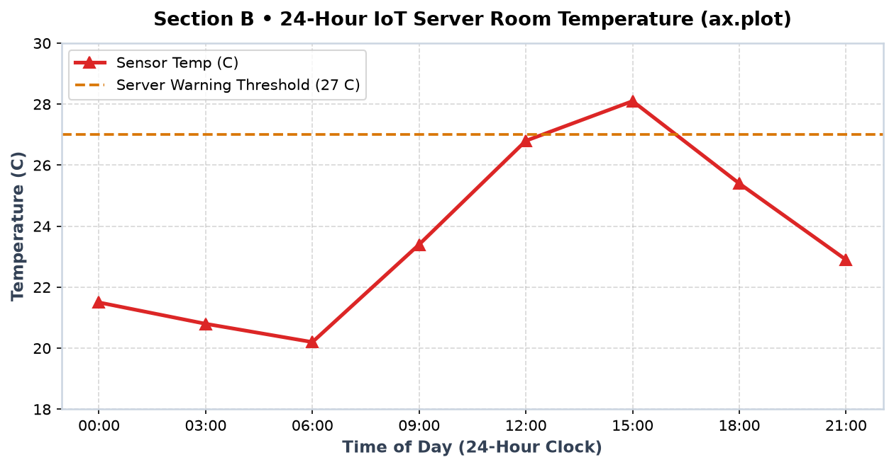
Bina marker ke line chart continuous lagta hai, jisse student ya analyst yeh identify nahi kar pata ki actual measurement kab li gayi thi. Markers discrete data points ko explicitly highlight karte hain.
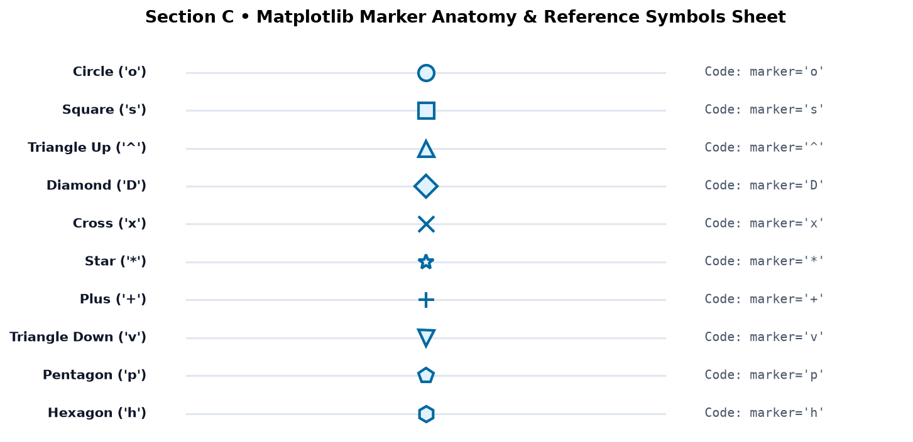
| Marker Symbol | Character String | Best Used For |
|---|---|---|
'o' | Circle | Standard smooth time-series, study tracker, general continuous trends |
's' | Square | Milestones, financial monthly blocks, laptop inventory |
'^' | Upward Triangle | Performance growth, positive gains, peak server temperatures |
'D' | Diamond | Executive metrics, tablet units, electricity usage |
'x' / '+' | Cross / Plus | Technical sensor telemetry, discrete scatter coordinates |
'*' | Star | Special holiday events, top exam rank, festival discount peaks |
Hollow circular markers (marker='o', markerfacecolor='#f5f3ff') use karke attendance trend visualize karna:
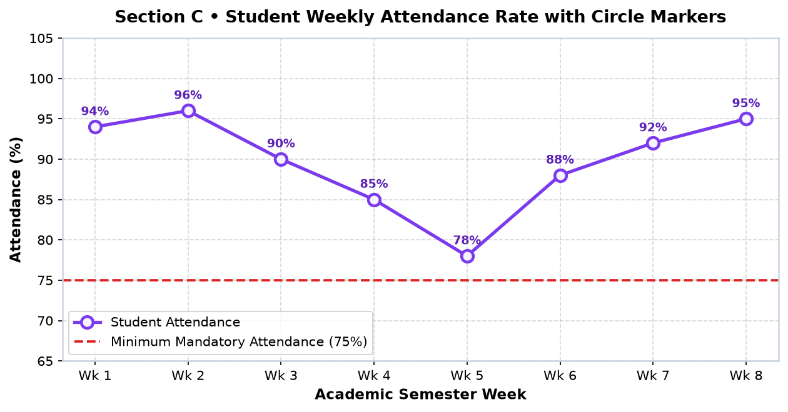
Jab do products compare karne hon, toh different marker shapes viewer ko instantly distinguish karne mein help karti hain:
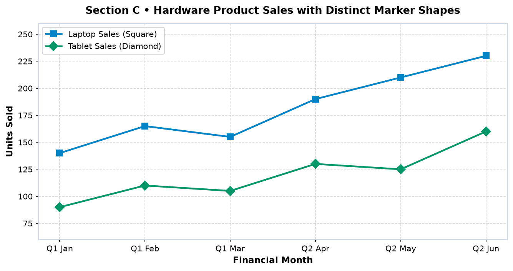
's') and tablet sales (Diamond 'D').Matplotlib lines ko customize karne ke 5 core parameters hote hain:
color: Hex codes (e.g. '#0284c7'), RGB, ya named colors ('green', 'crimson').linestyle: Solid ('-'), Dashed ('--'), Dash-Dot ('-.'), ya Dotted (':').linewidth: Line ki thickness points mein (default 1.5; enterprise charts mein 2.2–2.8 standard hai).alpha: Transparency from 0.0 (fully invisible) to 1.0 (fully opaque).label: Legend ke andar display hone wala descriptive name.Actual performance ko Solid Line ('-') aur corporate target ko Dashed Line ('--') se render karna:
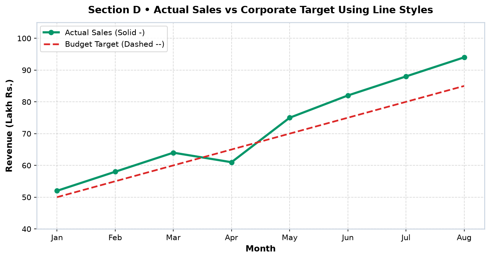
Sensor Alpha (Dash-Dot '-.') aur Sensor Beta (Dotted ':') ko plot karna:
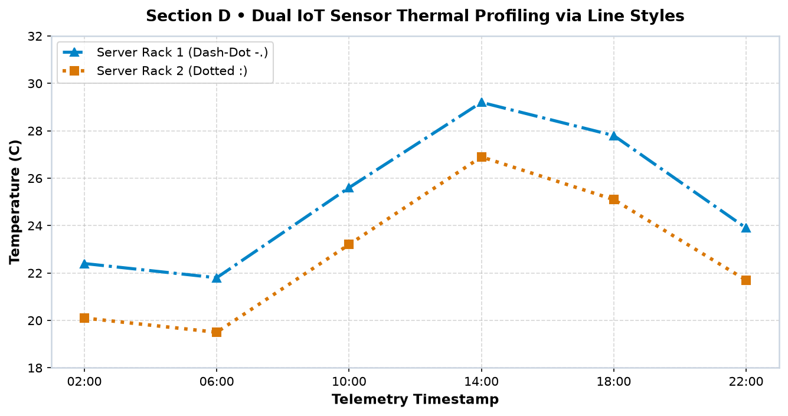
Markers ko high-contrast banane ke liye Matplotlib 5 detailed controls provide karta hai:
| Full Property Name | Shorthand | Description & Best Practice |
|---|---|---|
markersize | ms | Marker ka overall diameter in points (standard: 7 to 10). |
markerfacecolor | mfc | Marker ke inner body ka fill color (e.g. 'white' for hollow feel). |
markeredgecolor | mec | Marker ke outer ring ka border color (matches line color). |
markeredgewidth | mew | Border line ki thickness (standard: 2.0 to 3.0). |
White fill ke sath thick blue border use karne se markers clean aur modern lagte hain:
import matplotlib.pyplot as plt days = ['Mon', 'Tue', 'Wed', 'Thu', 'Fri', 'Sat', 'Sun'] scores = [78, 82, 80, 88, 85, 96, 92] fig, ax = plt.subplots(figsize=(9, 4.8), dpi=150) ax.plot( days, scores, color='#0284c7', linestyle='-', linewidth=2.5, marker='o', markersize=11, markerfacecolor='#ffffff', # White inside markeredgecolor='#0284c7', # Blue outer border markeredgewidth=3.0, # Thick border ring label='Daily Quiz Score' ) ax.set_title('High-Contrast Marker Styling: Hollow Marker with Thick Border', fontsize=13, fontweight='bold') ax.set_xlabel('Study Day', fontsize=11, fontweight='bold') ax.set_ylabel('Daily Quiz Score (%)', fontsize=11, fontweight='bold') ax.set_ylim(70, 102) ax.grid(True, linestyle='--', alpha=0.5) ax.legend(loc='lower right') plt.show()
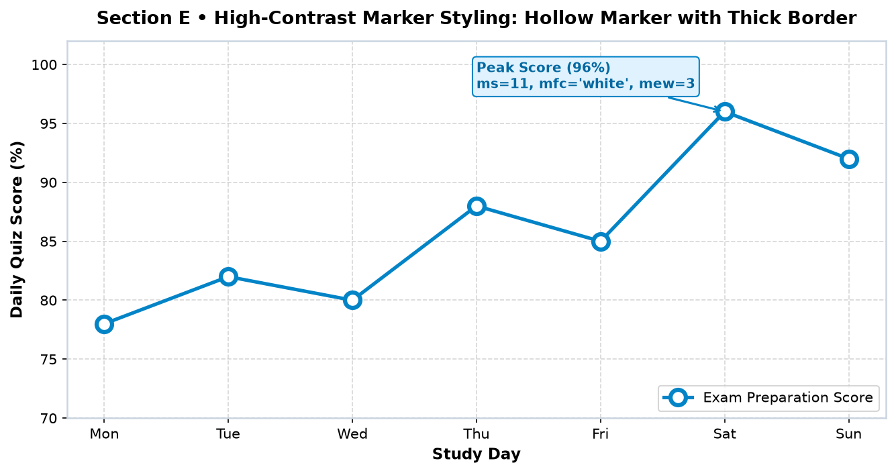
Lines trend represent karti hain jabki markers exact data points communicate karte hain. Jab dono combine hote hain, toh user ko trend aur underlying numbers dono ek sath samajh aate hain:
12 months ki continuous sales curve ko circular green markers ke sath plot karna:
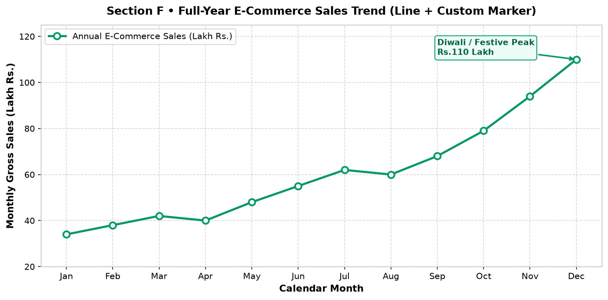
Household daily energy consumption (kWh) with safety benchmark threshold:
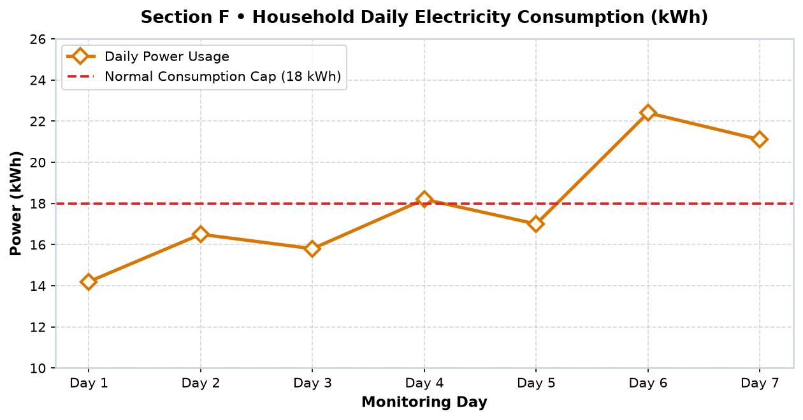
Ek hi Axes par multiple datasets compare karne ke liye hum ax.plot() ko multiple times call karte hain aur hamesha label aur ax.legend() provide karte hain.
Aarav weekend study prefer karta hai jabki Priya weekdays mein consistently padhti hai:
import matplotlib.pyplot as plt days = ['Mon', 'Tue', 'Wed', 'Thu', 'Fri', 'Sat', 'Sun'] aarav = [3.0, 4.0, 3.5, 4.5, 5.0, 6.5, 5.5] priya = [4.5, 4.0, 5.0, 5.5, 4.0, 3.5, 4.0] fig, ax = plt.subplots(figsize=(9, 4.8), dpi=150) ax.plot(days, aarav, color='#0284c7', linestyle='-', linewidth=2.5, marker='o', markersize=7.5, label='Aarav (Weekend Heavy)') ax.plot(days, priya, color='#7c3aed', linestyle='--', linewidth=2.5, marker='s', markersize=7.5, label='Priya (Weekday Consistent)') ax.set_title('Comparing Weekly Study Patterns: Aarav vs Priya', fontsize=13, fontweight='bold') ax.set_xlabel('Day of the Week', fontsize=11, fontweight='bold') ax.set_ylabel('Study Hours', fontsize=11, fontweight='bold') ax.set_ylim(1, 8) ax.grid(True, linestyle='--', alpha=0.5) ax.legend(loc='upper left') plt.show()
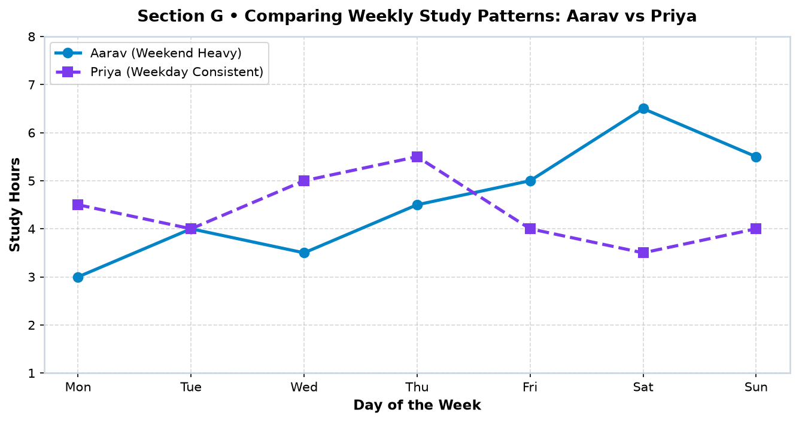
Enterprise reports mein current actual, quarterly budget target, aur pichle saal ke same month (YoY) ko 3 different line styles se compare kiya jata hai:
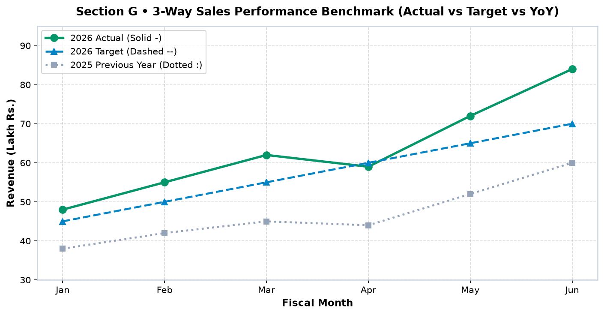
Graph ko accurately readable banana sirf lines draw karne tak limited nahi hai; axis styling aur scaling viewers ke perception ko define karti hai.
Agar Y-axis ko artificially truncate kar diya jaye (jaise 95 to 100), toh 1% ka minor difference bhi gigantic jump dikhai de sakta hai. Financial aur educational metrics mein scale ko 0 baseline ya meaningful context ke sath hi frame karna chahiye.
Custom Y-ticks (set_yticks([50, 60, 70, 80, 90, 100])) aur explicit data labels:
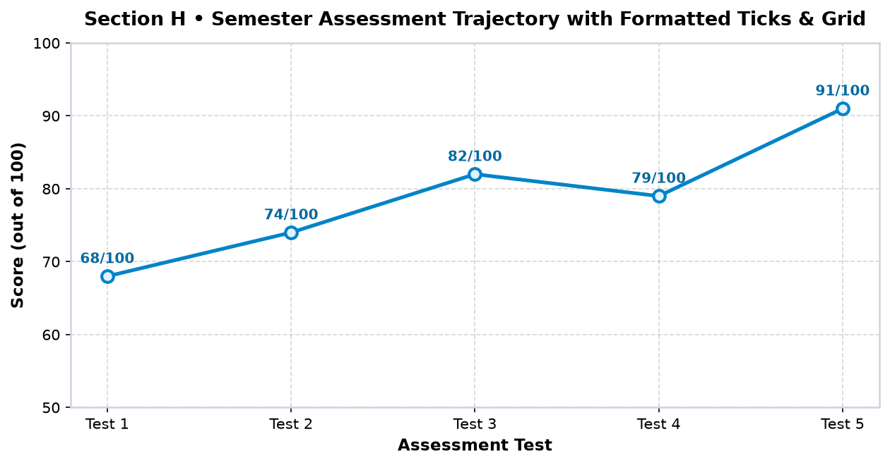
ax.fill_between() use karke revenue aur expenses ke beech net operating profit area highlight karna:
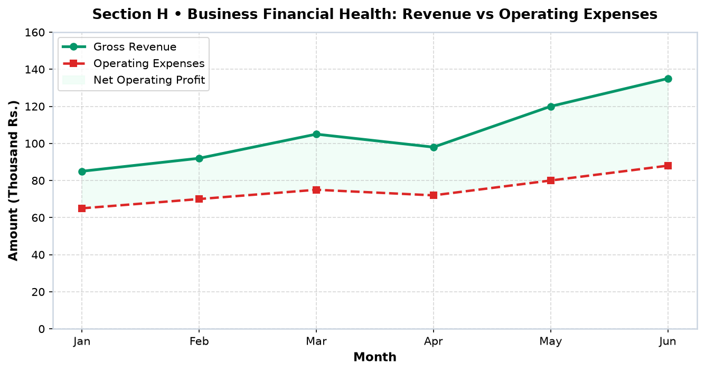
Real-life data collection mein IoT sensors fail ho sakte hain, internet drop ho sakta hai, ya maintenance break ho sakti hai. Data science ka golden principle hai: Missing data ko secretly connect mat karo!
np.nan ya float('nan') assign karne se line plot wahan break ho jata hai, jo honest visual report banata hai.
import matplotlib.pyplot as plt import numpy as np days = [f'Oct {i}' for i in range(1, 11)] # Oct 5 has server outage: Assign np.nan traffic = [4500, 4800, 5200, 4900, np.nan, 5600, 5900, 6400, 6800, 7100] fig, ax = plt.subplots(figsize=(9.5, 4.8), dpi=150) ax.plot(days, traffic, color='#0284c7', marker='o', markersize=8, linewidth=2.5, label='Daily Active Users') ax.set_title('Honest Time-Series: Matplotlib Disconnects Across Missing (NaN) Values', fontsize=13, fontweight='bold') ax.set_xlabel('Calendar Date', fontsize=11, fontweight='bold') ax.set_ylabel('Active Users', fontsize=11, fontweight='bold') ax.set_ylim(3500, 7800) ax.grid(True, linestyle='--', alpha=0.5) # Shaded span and annotation explaining the outage ax.axvspan('Oct 4', 'Oct 6', color='#fef2f2', alpha=0.6) ax.annotate('Oct 5: Server Outage\n(No data recorded)', xy=('Oct 5', 5200), xytext=('Oct 3', 6800), arrowprops=dict(arrowstyle='->', color='#dc2626', lw=1.5), fontsize=9.5, fontweight='bold', color='#dc2626', bbox=dict(boxstyle='round,pad=0.3', facecolor='#ffffff', edgecolor='#dc2626')) ax.legend(loc='lower right') plt.show()
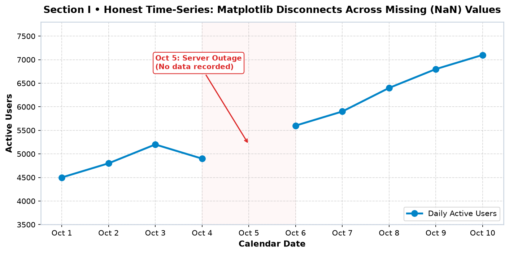
Line charts aur markers use karte samay aane wale 12 most frequent errors aur unka exact fix:
| # | Mistake & Symptom | Incorrect Code | Correct Code & Why |
|---|---|---|---|
| 1 | Array Length Mismatch (ValueError) |
x = [1, 2, 3] |
len(x) == len(y) ensure karo. Har X observation ke paas matching Y coordinate hona chahiye. |
| 2 | Unsorted X-values creating zigzag spiderweb | x = [5, 1, 4, 2] |
x, y = zip(*sorted(zip(x, y))) — Line plots connecting lines draw karte hain array order mein, isliye X sort hona zaroori hai. |
| 3 | Calling label=... but forgetting ax.legend() |
Line plots have labels, but no legend appears. | Always call ax.legend() explicitly before plt.show(). |
| 4 | Using identical line styles for all series | 3 solid blue lines with no markers. | Use distinct styles: solid ('-'), dashed ('--'), dotted (':') + unique markers. |
| 5 | Gigantic marker size obscuring the chart | markersize=40 |
Keep markersize in the readable 6 to 10 range. |
| 6 | Too many points with markers (visual clutter) | 10,000 hourly points with marker='o'. |
High-frequency data par markers off rakho ya markevery=100 use karo! |
| 7 | Clipped axis labels on export | Labels cut off at canvas border. | Always use fig.tight_layout() and plt.savefig(..., bbox_inches='tight'). |
| 8 | Trunkating Y-axis to exaggerate minor fluctuations | Y-axis limits set to 99.1 to 99.8. | Provide zero-baseline or include contextual perspective so users are not misled. |
| 9 | Assuming Line Plot proves Causation | "Study hours badhe toh weather acha hua." | Line charts show correlation/trend over time, NOT automatic direct causation! |
| 10 | Silently joining lines across missing data days | Skipping missing date without NaN. | Use np.nan for missing records to render an honest gap. |
| 11 | Calling plt.show() before plt.savefig() |
Blank image file saved. | Always call plt.savefig() before plt.show() because show() flushes memory. |
| 12 | Writing markersize='big' instead of numeric |
TypeError: must be a number |
Pass a float/integer like markersize=8. |
Aao ek complete, 2-panel weekly student executive dashboard design karein:
import matplotlib.pyplot as plt # Synthetic Weekly Productivity Dataset days = ['Mon', 'Tue', 'Wed', 'Thu', 'Fri', 'Sat', 'Sun'] study_hours = [3.0, 4.0, 2.5, 4.5, 3.8, 6.5, 5.0] questions_solved = [25, 35, 18, 40, 32, 60, 45] productivity_score = [75, 85, 65, 88, 80, 95, 86] fig, (ax1, ax2) = plt.subplots(2, 1, figsize=(10, 7.5), dpi=150, sharex=True) # Panel 1: Primary axis (Study Hours) ax1.plot(days, study_hours, color='#0284c7', marker='o', markersize=7.5, linewidth=2.5, label='Study Hours (Left)') ax1.set_ylabel('Hours', color='#0284c7', fontweight='bold') ax1.tick_params(axis='y', labelcolor='#0284c7') ax1.set_ylim(0, 8) ax1.grid(True, linestyle='--', alpha=0.4) # Panel 1: Twin axis (Questions Solved) ax1_twin = ax1.twinx() ax1_twin.plot(days, questions_solved, color='#059669', marker='s', markersize=7.5, linewidth=2.2, linestyle='--', label='Questions Solved (Right)') ax1_twin.set_ylabel('Practice Questions', color='#059669', fontweight='bold') ax1_twin.tick_params(axis='y', labelcolor='#059669') ax1_twin.set_ylim(0, 75) ax1.set_title('Panel A: Effort Metrics — Study Hours vs Practice Problems Solved', fontsize=12, fontweight='bold') # Panel 2: Productivity Index ax2.plot(days, productivity_score, color='#7c3aed', marker='^', markersize=8, linewidth=2.5, label='Composite Productivity Score (0-100)') ax2.axhline(80, color='#d97706', linestyle='--', linewidth=1.8, label='Weekly Target Benchmark (80 pts)') ax2.set_title('Panel B: Outcome Metrics — Daily Focus & Quality Productivity Index', fontsize=12, fontweight='bold') ax2.set_xlabel('Day of the Week', fontsize=11, fontweight='bold') ax2.set_ylabel('Score (0-100)', fontweight='bold') ax2.set_ylim(50, 105) ax2.grid(True, linestyle='--', alpha=0.4) ax2.legend(loc='lower right') fig.suptitle('Mini Project 1: Student Weekly Productivity & Cognitive Output Tracker', fontsize=14, fontweight='bold', y=0.98) fig.tight_layout(rect=[0, 0, 1, 0.96]) plt.show()
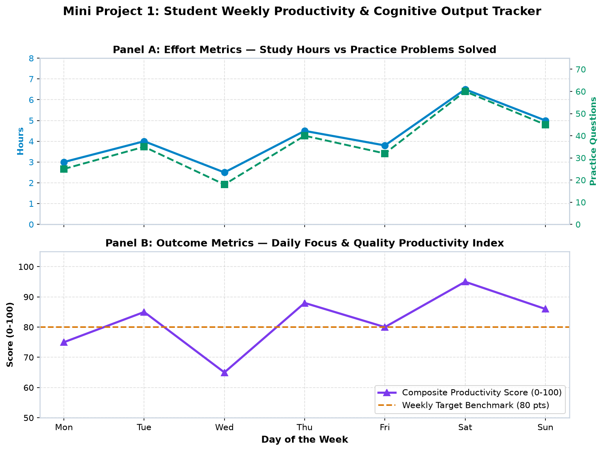
Annual store operations ko side-by-side analyze karne ke liye 1×2 dashboard banate hain:
import matplotlib.pyplot as plt months = ['Jan', 'Feb', 'Mar', 'Apr', 'May', 'Jun', 'Jul', 'Aug', 'Sep', 'Oct', 'Nov', 'Dec'] actual_sales = [32, 38, 41, 46, 52, 60, 68, 65, 74, 88, 108, 125] target_sales = [30, 35, 40, 45, 50, 55, 60, 65, 70, 80, 95, 110] visitors = [12, 14, 15, 17, 19, 22, 25, 23, 27, 34, 42, 50] fig, (ax1, ax2) = plt.subplots(1, 2, figsize=(11.5, 5), dpi=150) # Left Plot: Sales vs Target ax1.plot(months, actual_sales, color='#059669', marker='o', markersize=7, linewidth=2.5, label='Actual Revenue (Lakh Rs.)') ax1.plot(months, target_sales, color='#dc2626', linestyle='--', linewidth=2.2, label='Budget Target') ax1.set_title('Sales Performance vs Target Milestone', fontsize=11.5, fontweight='bold') ax1.set_xlabel('Month', fontweight='bold') ax1.set_ylabel('Revenue (Lakh Rs.)', fontweight='bold') ax1.set_ylim(20, 140) ax1.grid(True, linestyle='--', alpha=0.4) ax1.tick_params(axis='x', rotation=35) ax1.legend(loc='upper left') # Right Plot: Traffic ax2.plot(months, visitors, color='#0284c7', marker='s', markersize=7, linewidth=2.5, label='Unique Visitors (Thousands)') ax2.set_title('Website Traffic Funnel Growth', fontsize=11.5, fontweight='bold') ax2.set_xlabel('Month', fontweight='bold') ax2.set_ylabel('Visitors (Thousands)', fontweight='bold') ax2.set_ylim(5, 58) ax2.grid(True, linestyle='--', alpha=0.4) ax2.tick_params(axis='x', rotation=35) ax2.legend(loc='upper left') fig.suptitle('Mini Project 2: E-Commerce Store Annual Performance Command Board', fontsize=13.5, fontweight='bold', y=0.98) fig.tight_layout(rect=[0, 0, 1, 0.95]) plt.show()
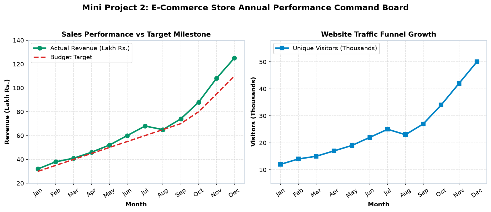
ax.twinx()), formatted ticks, combined single legend below chart, and custom labels.import matplotlib.pyplot as plt km = [f'Km {i}' for i in range(1, 11)] pace_min = [5.5, 5.2, 5.1, 5.0, 4.9, 4.8, 5.0, 4.7, 4.6, 4.3] heart_rate = [135, 142, 148, 153, 156, 160, 162, 165, 168, 174] fig, ax1 = plt.subplots(figsize=(9.5, 4.8), dpi=150) # Left Axis: Running Pace ax1.plot(km, pace_min, color='#0284c7', marker='o', markersize=8, linewidth=2.5, label='Running Pace (min/km)') ax1.set_xlabel('Distance Interval', fontsize=11, fontweight='bold') ax1.set_ylabel('Pace (Minutes / Km)', color='#0284c7', fontsize=11, fontweight='bold') ax1.tick_params(axis='y', labelcolor='#0284c7') ax1.set_ylim(4.0, 6.0) ax1.grid(True, linestyle='--', alpha=0.4) # Right Twin Axis: Heart Rate ax2 = ax1.twinx() ax2.plot(km, heart_rate, color='#dc2626', marker='^', markersize=8, linewidth=2.5, linestyle='--', label='Heart Rate (BPM)') ax2.set_ylabel('Heart Rate (BPM)', color='#dc2626', fontsize=11, fontweight='bold') ax2.tick_params(axis='y', labelcolor='#dc2626') ax2.set_ylim(120, 185) ax1.set_title('Mini Challenge Solution: 10K Marathon Pace & Heart Rate Biometrics', fontsize=13, fontweight='bold', pad=12) # Single unified legend below plot lines1, labels1 = ax1.get_legend_handles_labels() lines2, labels2 = ax2.get_legend_handles_labels() ax1.legend(lines1 + lines2, labels1 + labels2, loc='upper center', bbox_to_anchor=(0.5, -0.15), ncol=2, frameon=True) fig.tight_layout() plt.show()
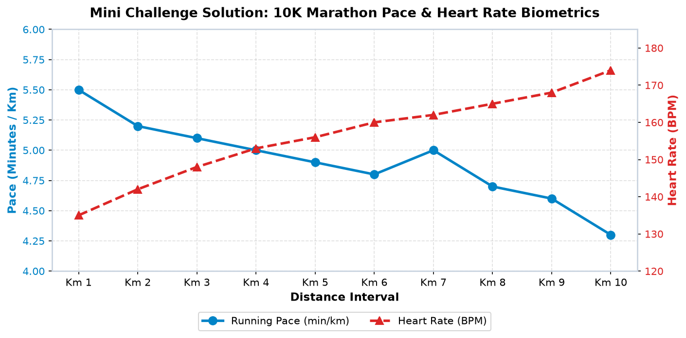
| Parameter / Method | Options & Values | Typical Use Case |
|---|---|---|
linestyle | '-' (solid), '--' (dashed), '-.' (dashdot), ':' (dotted) | Distinguish actual vs target vs previous year |
marker | 'o', 's', '^', 'D', 'x', '*', '+' | Make discrete observation points visible |
markersize (ms) | Numeric float (e.g. 7, 8, 10) | Adjust diameter of marker symbols |
markerfacecolor (mfc) | Hex code / color string (e.g. '#ffffff') | Create hollow or multi-toned marker designs |
markeredgecolor (mec) | Hex code / color string | Contrast ring surrounding the marker body |
markeredgewidth (mew) | Numeric float (e.g. 2.0, 3.0) | Thicken boundary ring around marker |
np.nan | Missing observation value in array | Creates honest gap in line plot without false joins |
ax.twinx() | Creates twin Y-axis sharing same X-axis | Plot two metrics with different units (e.g. Pace & BPM) |
np.nan so Matplotlib renders an honest gap.
Agli class mein hum categorical data visualization explore karenge:
plt.bar()) vs Horizontal bar charts (plt.barh()).